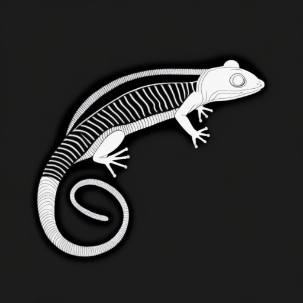
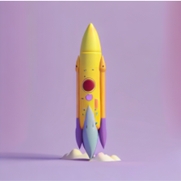
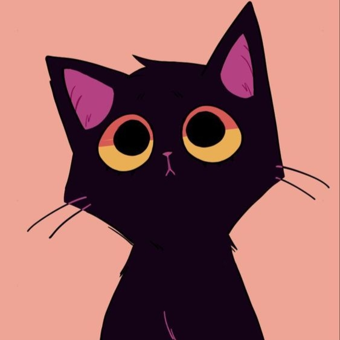
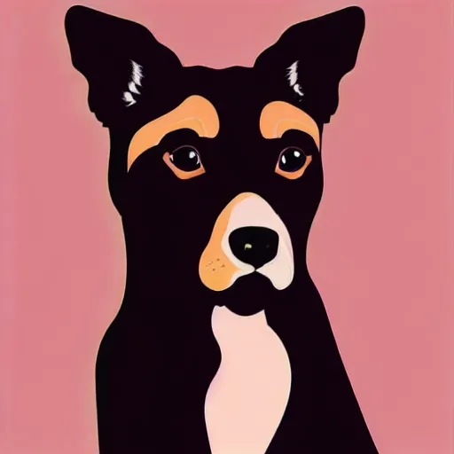
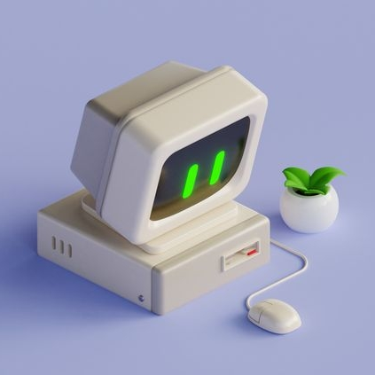
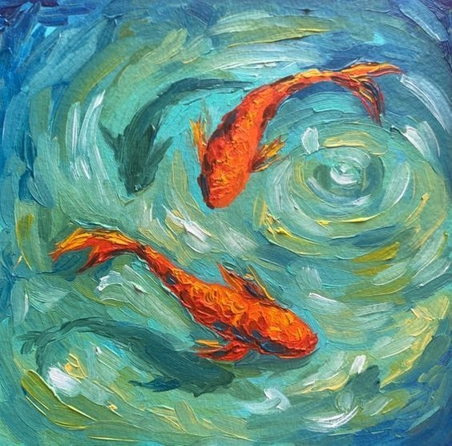
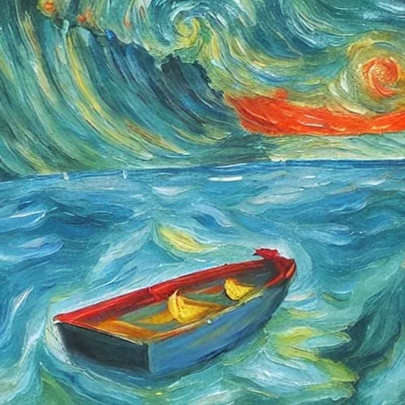

Visualization results of StyleShot for text and image driven style transfer across six style reference images. Each stylized image is generated by StyleShot without test-time style-tuning, capturing numerous nuances such as colors, textures, illumination and layout.
StyleShot is a style transfer model that excels in text and image-driven style transferring without test-time style-tuning.
Abstract
In this paper, we show that, a good style representation is crucial and sufficient for generalized style transfer without test-time tuning. We achieve this through constructing a style-aware encoder and a well-organized style dataset called StyleGallery. With dedicated design for style learning, this style-aware encoder is trained to extract expressive style representation with decoupling training strategy, and StyleGallery enables the generalization ability. We further employ a content-retention encoder to enhance image-driven style transfer. We highlight that, our approach, named StyleShot, is simple yet effective in mimicking various desired styles, i.e., 3D, flat, abstract or even fine-grained styles, without test-time tuning. Rigorous experiments validate that, StyleShot achieves superior performance across a wide range of styles compared to existing state-of-the-art methods.
Method
StyleShot is built on Stable Diffusion. To design a style encoder that specially extracts rich and expressive style embedding, our pipeline comprises a style transfer model with a style-aware encoder. Moreover, we proposed a content-fusion encoder to enhance the integration of content and style.
Gallery
We present results on text and image-driven style transfer. Our StyleShot effectively captures a broad spectrum of style features, ranging from basic elements like colors and textures to intricate components like layout, structure, and shading. Transfer your own style with our open source code or online demo.
Text-driven style transfer
From left to right, Reference style image, ``A cat'', ``A dog'', ``A moose'', ``A chef preparing meals in kitchen'', ``A house with a tree beside'', ''A wolf walking stealthily through the forest''.
Image-driven style transfer
Animation & Audio
We also employ image to video model DynamiCrafter and video-to-audio model FoleyCrafter on stylized images generated by StyleShot to present more interesting results.
Style

Stylized ImageVideoStyleStylized Image

Video





Societal Impact
We recognize that StyleShot possesses the capability to replicate the styles of individual artists without their consent, and we advocate for the responsible usage of our technology.
BibTex
@article{gao2024styleshot,
title={Styleshot: A snapshot on any style},
author={Gao, Junyao and Liu, Yanchen and Sun, Yanan and Tang, Yinhao and Zeng, Yanhong and Chen, Kai and Zhao, Cairong},
journal={arXiv preprint arXiv:2407.01414},
year={2024}
}